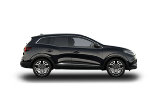

SUV a Renault-tól
kezdő listaár 9 499 000 Ft|
dizájn a kifejező karakterű terepjáróA Kadjar kifejezőbb dizájnnal tér vissza. Új orr-részével, megújított lökhárítóival, króm díszítésű oldalsó védőelemeivel, új LED-fényjegyeivel és 19”-os könnyűfém felnijeivel magára vonzza a tekinteteket az úton. Bőrbevonatú felületekkel rendelkező, részletgazdag és finom kidolgozású belső tere mindenki figyelmét felkelti. |
 |
KALANDOR A MINDENNAPOKBAN
Okostelefonját könnyedén csatlakoztathatja USB csatlakozó segítségével autójához, így autózás közben egyszerűen használhatja kedvenc alkalmazásait az R-LINK 2 rendszer képernyőjén keresztül. A legjobb korábbi Renault-technológiák mellett a Kadjar sebességtúllépésre figyelmeztető rendszerrel is fel van szerelve.
|
multimédia- és hangrendszer
Az R-Link segítségével multimédiás tartalmait egy szempillantás alatt érheti el. Ami a hangzást illeti, válassza a legjobbat: a Bose® prémium hangrendszert! |
sebességtúllépésre figyelmeztető rendszer
A rendszer segít betartatni a sebességhatárokat, hiszen a szélvédő mögött található kamera képes felismerni a sebességkorlátozást jelző táblákat. Amennyiben túl gyorsan halad, a műszerfal és a navigációs rendszer erre vizuálisan figyelmezteti. |
Forras:Renault.hu